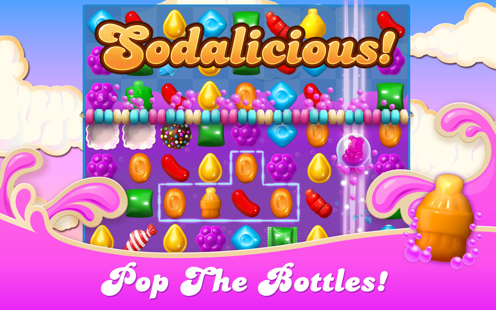
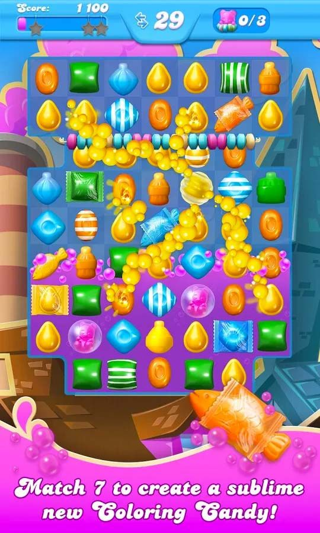
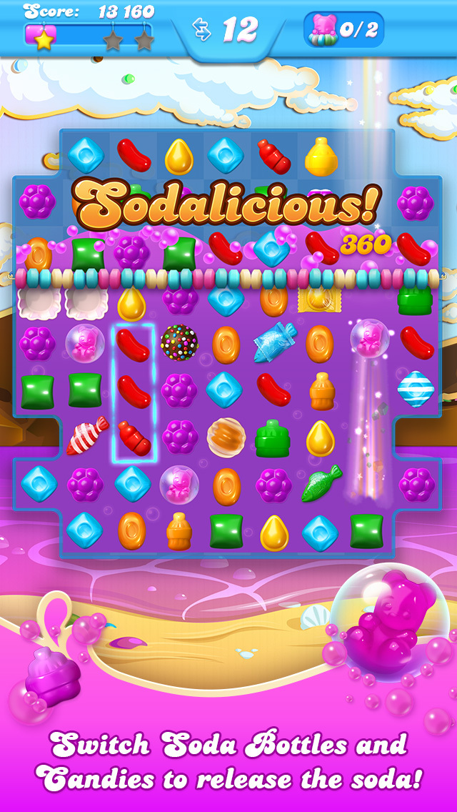

There are thousands of levels to complete, as well as new levels to be won everyday. You never know what the next level will be comprised of! Levels vary from easy to super hard,
complete with various tasks to accomplish before moving along. You will be tasked with challenges such as spreading jam across the board, rescuing gummy bears trapped under ice or inside bubbles,
freeing candy trapped in gum, defeating the Bubblegum Troll, freeing honey-trapped bears, or popping soda bottles.
Soda levels are the most common type of level in Candy Crush Soda. Here you will be matching soda bottles in order to bring the purple soda level to the top.
Combining three or more soda bottles will either help you to collect the required amount of bottles or raise the soda level to the top. Frosting levels are introduced in Candy Crush Soda Level 6.
Here you will need to clear out the ice blocks in order to find the bears underneath them. There will be a certain number of bears hidden throughout the board that you will need to find to beat the level.
To clear the ice, you will need to make a match with the same candy that is hidden underneath it. In bubble levels, players will need to pop the soda bottles in order to raise the soda level and move the gummy bears above the candy string.
To move the bears, which will be inside of bubbles, to the top of the candy string, you will need to make matches above them on the board. Chocolate levels will contain chocolate squares around the board.
To beat this level you will need to make matches next to the chocolate in order to clear it from the board. The chocolate will continue to spread as you make moves around the board. For a bubble gum level, the player has to chew all the bubble gum on the board.
The objective is similar to that of chocolate levels. If a move is made in which no gum is destroyed, it spreads by one square before the player is allowed to make the next move. It can do this either by occupying an adjacent square or by adding a layer to the current square,
which traps the candy on that square. To beat honey levels, you will need to clear out all of the bears that are hiding underneath the honey blocks. The honey blocks can have up to six layers to clear off. This means you will have to make multiple matches in order to free the bear.
Jam levels require the player to spread jam everywhere. Apart from finding bears and removing chocolate, bubble gum and soda bottles, the jam must be spread over the entire board. Jam can be spread by matching candies which are on the existing jam.
  Different candy combinations lead to special candies. Match same-colored candies to explode rows of candies to gain more points and win levels. Matching four candies in a square creates a homing Swedish Fish.
These candies home in on a random obstruction or soda bottle. Matching four candies either horizontally or vertically will create a Striped Candy. These candies wipe an entire line or column, including obstructions. If you make a vertical match of four, you will get a horizontal Striped Candy.
A horizontal match of four makes a vertical Striped Candy. Creating a match of five in these shapes at any angle will create an explosive Wrapped Candy. Wrapped Candies explode twice: once when they are matched, and again after the surrounding candies have settled after the first explosion.
Creating a match of five in a straight vertical or horizontal line will create a powerful Color Bomb. When swapped with another candy, Color Bombs will destroy all candies of that color. The Coloring Candy is made by making a match of six, with a matching candy next to a line of five.
When swapped with a candy of another color, they change all candies of the swapped candy's color to that of the Coloring Candy.
As well, a special Bubblegum Hill challenge is offered at hours at a time. The goal is to dethrone the Bubblegum Troll by winning five levels using only a single life. The player you get the chance to compete against others to take the throne, and win gold bars and lollipop bangers as rewards.
Complete daily and weekly challenges! Candy Crush Soda will keep you occupied until you run out of lives to play. Team up with others to win rewards, achieve goals to win lives, and defeat the villains to pass levels. To help you win levels faster, use the power-ups you had won.
Earn free rewards or purchase power-ups if they’re necessary.